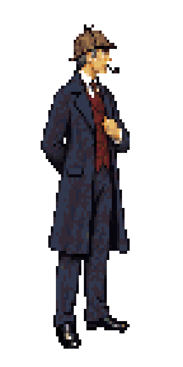
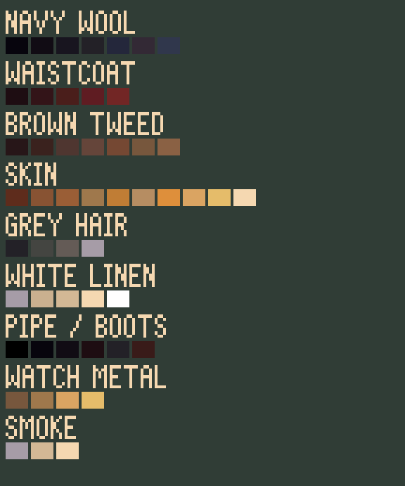
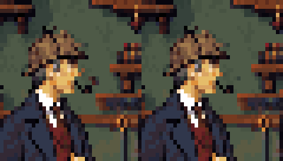
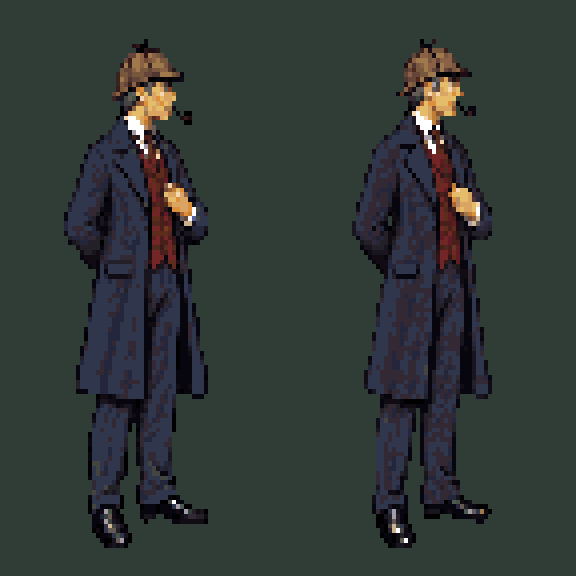

The approved neutral sprite is the identity reference. Its pixels, palette, head, body proportions and costume are fixed. New action drawings must follow this model; generated sheets are pose studies, not replacement character designs.


Locked Pixelorama master · Exact character palette
Versioned reference contract · Whole-pose drawing template

A brighter 19-pixel curl, a longer peak hold, then dissipation. The character uses the exact fixed model throughout.

Five leftover mouth/pipe pixels belonged to the old background. The repair restores the wall beneath them; Holmes's sprite is unchanged.

Zero character pixels change in the fixed version. The Pixelorama body layer is locked and linked across all 26 frames; the smoke is a separate layer.
Width bands include sleeves and vary with pose. Head comparisons allow small translations; intentional head tilts and occlusion still need visual review. These are diagnostics, not an automatic anatomy score.
Reuse an exact cel while it is unchanged. For a new pose, draw the complete anatomy and clothing against this master using joint guides and onion skins. A different head angle needs a named, consistent variant. Do not paste arbitrary limbs onto a frozen torso or generate a new character identity for each frame.
The walk’s width correction is still pending under this method. The previous animation studies remain available for action reference.
Workflow, sources and verification · Measured differences · Previous motion study